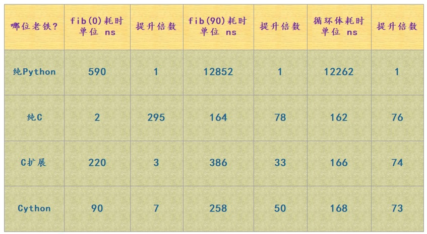

1.Cython概述
1、关于Cython
1.1 Cython
Cython 是一门编程语言，它将 C、C++ 的静态类型系统融合在了 Python 身上。文件的后缀是 .pyx，它是 Python 的一个超集；语法是 Python 语法和 C 语法的混血，当然我们说它是 Python 的一个超集，因此你写纯 Python 代码也是可以的。
cython 是一个编译器，负责将 Cython 源代码翻译成高效的 C 或者 C++ 源代码；Cython 源文件被编译之后的最终形式可以是 Python 的扩展模块（.pyd），也可以是一个独立的可执行文件。
因此 Cython 的强大之处就在于它将 Python 和 C 结合了起来，可以让你像写 Python 代码一样的同时还可以获得 C 的高效率；所以我们看到 Cython 相当于是高级语言 Python 和低级语言 C 之间的一个融合。
1.2 Cython和CPython的区别
Python 是一门语言，它有自己的语法规则。按照 Python 语言规定的语法规则编写的代码就是 Python 源代码，但是源代码只是一个或多个普通的文本文件，需要使用 Python 语言对应的解释器来执行它。
而 Python 解释器也会按照同样的语法规则来对我们编写的 Python 源代码进行分词、语法解析等等，如果我们编写的代码不符合 Python 的语法规则，那么会报出语法错误，也就是 SyntaxError。如果符合语法规范的话，那么会顺利的生成抽象语法树（Abstract Syntax Tree，简称AST），然后将 AST 编译成指令集合，也就是所谓的字节码（bytes code），最后再执行字节码。
所以我们看到 Python 源代码是需要 Python 解释器来操作的，我们想做一些事情的话，如果光写成源代码是不行的，必须要由 Python 解释器将我们的代码解释成机器可以识别的指令进行执行才可以。而 CPython 正是 Python 语言对应的解释器，并且它也是官方实现的标准解释器，同时还是是使用最广泛的一种解释器。基本上我们使用的解释器都是 CPython，也就是从官网下载、然后安装之后所得到的。
标准解释器 CPython 是由 C 语言实现的，除了 CPython 之外还有 Jython（java实现的 Python 解释器）、PyPy（Python 语言实现的 Python 解释器）等等。总之设计出一门语言，还要有相应的解释器才可以；至于编译型语言，则是对应的编译器。
最后重点来了， CPython 解释器是由 C 实现的，它给 Python 语言提供了 C 级别的接口，也就是熟知的 Python/C API。比如：Python 中的列表，底层对应的是 PyListObject；字典则对应 PyDictObject，等等。所以当我们在Python中创建一个列表，那么 CPython 在执行的时候，就会在底层创建一个 PyListObject。因为 CPython 是用C来实现的，最终肯定是将 Python 代码翻译成 C 级别的代码，然后再变成机器码交给 CPU 执行。而 Cython 也是如此，Cython 代码也是要被翻译成 C 代码的，而实现这一点的就是 cython 编译器（本质上是一个第三方模块，所以同样依赖于 CPython）。因此 Cython 是一门语言，它并不是Python 解释器的另一种实现，它的地位和 CPython 不是等价的，不过和 Python 是平级的。
因此 Cython 是一门语言，可以通过 Cython 源代码生成高效的扩展模块，同样需要 CPython 来进行调用。
2、Python、C、C扩展、Cython比较
以简单的斐波那契数列为例，来测试一下它们执行效率的差异：
Python代码：
1 | def fib(n): |
C代码：
1 | double cfib(int n) |
上面便是 C 实现的一个斐波那契数列，可能有人好奇为什么使用浮点型，而不是整型呢？答案是 C 中的整型是有范围的，所以使用 double，而且 Python 中 float 在底层对应的是PyFloatObject、其内部也是通过 double 来存储的。
然后是 C 扩展:
注意：C 扩展不是我们的重点，写 C 扩展和写 Cython 本质是一样的，都是为 Python 编写扩展模块，但是写 Cython 绝对要比写 C 扩展简单的多。
1 | static PyObject * fib(PyObject *self, PyObject *n) |
Cython:
1 | def fib(int n): |
Python 中所有的变量都是一个 PyObject *，在底层中就是 C 的一个指针。PyObject（C 的一个结构体）内部有两个成员，分别是 ob_refcnt：保存对象的引用计数、ob_type *：保存对象类型的指针。不管是整型、字符串、元组、字典，亦或是其它的什么，所有指向它们的变量都是一个 PyObject *，当进行操作的时候，首先要通过 -> ob_type 来获取对应的类型的指针，再进行转化。
比如：这里的 a 和 b，我们虽然知道无论进行哪一层循环，结果指向的都是浮点数，但是 Python 解释器不会做这种推断。每一次相加都要进行检测，判断到底是什么类型并进行转化，然后执行加法的时候，再去找内部的 add 方法，将两个对象相加，创建一个新的对象，执行结束后再将这个新对象的指针转成 PyObject *，然后返回。并且 Python 中的对象都是在堆上分配空间，再加上 a 和 b 不可变，所以每一次循环都会创建新的对象，并将之前的对象给回收掉。
2.1 效率差异

提升的倍数，指的是相对于纯 Python 来说在效率上提升了多少倍；第二列是fib(0)，显然它没有真正进行循环，fib(0) 测量的是调用一个函数所需要花费的开销；而倒数第二列 “循环体耗时” 指的是执行 fib(90) 的时候，排除函数调用本身的开销，也就是执行内部循环体所花费的时间。
- Python：各方面都是表现最差的那一个。从 fib(0) 来看，调用一个函数要花 590 纳秒。和 C 相比慢了这么多，原因就在于 Python 调用一个函数的时候需要创建一个栈帧，而这个栈帧是分配在堆上的，而且结束之后还要涉及栈帧的销毁等等。至于 fib(90)，显然无需分析了。
- C：显然此时没有和 Python 运行时的交互，因此消耗的性能最小。
- C扩展：看一下循环体耗时，发现 C 扩展和纯 C 是差不多的，区别就是函数调用上花的时间比较多。原因就在于在调用扩展模块的函数时，需要先将 Python 中的数据转成 C 中的数据，然后在 C 计算斐波那契数列，计算完了再将 C 中的数据转成 Python 中的数据。C 扩展本质也是 C 语言，只不过在编写的时候遵循 Python 提供的 API 规范，可以将 C 代码编译成 pyd 文件，直接让 Python 来调用。
- Cython：单独看循环体耗时的话，我们看到纯 C、C 扩展、Cython 都是差不多的，但是编写 Cython 显然是最方便的。 Cython 做的事情和 C 扩展本质是类似的，都是为 Python 提供扩展模块，所以对于 Cython 来说，将 Python 的数据转成 C 的数据、进行计算、然后再转成 Python 中的数据返回，这一过程是无可避免的。但是我们看到 Cython 在函数调用时的耗时相比 C 扩展却要少很多，主要是 Cython 生成的C代码是经过高度优化的。
2.2 Python的for循环为什么这么慢？
通过循环体耗时我们看到，Python 的 for 循环真的是出了名的慢，那么原因是什么呢？
2.2.1 Python 的 for 循环机制
Python 在遍历一个可迭代对象的时候，会先调用这个可迭代对象内部的__iter__ 方法返回其对应的迭代器，然后再不断地调用这个迭代器的 __next__方法，将值一个一个的迭代出来，直到迭代器抛出 StopIteration 异常，for循环捕捉，终止循环。而迭代器是有状态的，Python 解释器需要时刻记录迭代器的迭代状态。
2.2.2 python的算数操作
Python 由于其动态特性，使得其无法做任何基于类型的优化。比如：循环体中的 a + b，这个 a、b 指向的可以是整数、浮点数、字符串、元组、列表，甚至是实现了魔法方法 __add__ 的类的实例对象，等等。尽管我们知道是浮点数，但是 Python 不会做这种假设，所以每一次执行 a + b 的时候，都会检测其类型到底是什么？然后判断内部是否有__add__方法，以及两者能不能相加，然后条件满足的话再调用对应的 __add__ 方法，将 a 和 b 作为参数，将 a 和 b 指向的对象进行相加。计算出结果之后，再返回其指针转成 PyObject * 返回。
而对于 C 和 Cython 来说，在创建变量的时候就实现规定了类型。就是这个类型，不是其它的，因此编译之后的 a + b 只是一条简单的机器指令。这对比下来，Python 尼玛能不慢吗。
2.2.3 Python中对象的内存分配
Python 中的对象是分配在堆上面的，因为 Python 中的对象本质上就是 C 中的 malloc 函数为结构体在堆区申请的一块内存。在堆区进行内存的分配和释放是需要付出很大的代价的，而栈则要小很多，并且它是由操作系统维护的，会自动回收，效率极高。而堆显然没有此待遇，而恰恰 Python 的对象都是分配在堆上的，尽管 Python 引入了内存池机制使得其在一定程度上避免了和操作系统的频繁交互，并且还引入了小整数对象池以及针对字符串的intern机制。但事实上，当涉及到对象（任意对象、包括标量）的创建和销毁时，都会增加动态分配内存、以及 Python 内存子系统的开销。而 float 对象又是不可变的，因此每循环一次都会创建和销毁一次，所以效率依旧是不高的。
而 Cython 分配的变量，这里是 a 和 b，它们就不再是指针了（我们说 Python 中的变量本质上都是一个指针），而是分配在栈上的双精度浮点数。而栈上分配的效率远远高于堆，因此非常适合 for 循环，所以效率要比 Python 高很多。
所以在 for 循环方面，C 和 Cython 要比纯 Python 快了一个数量级以上，这并不是奇怪的事情，因为 Python 每次迭代都要做很多的工作。
2.3 使用Cython保证C代码
C代码：
1 | // fib.h |
Cython代码：
1 | cdef extern from "cfib.h": |
cdef extern from 可以看成是导入头文件，内部相当于定义要使用的 C 函数。